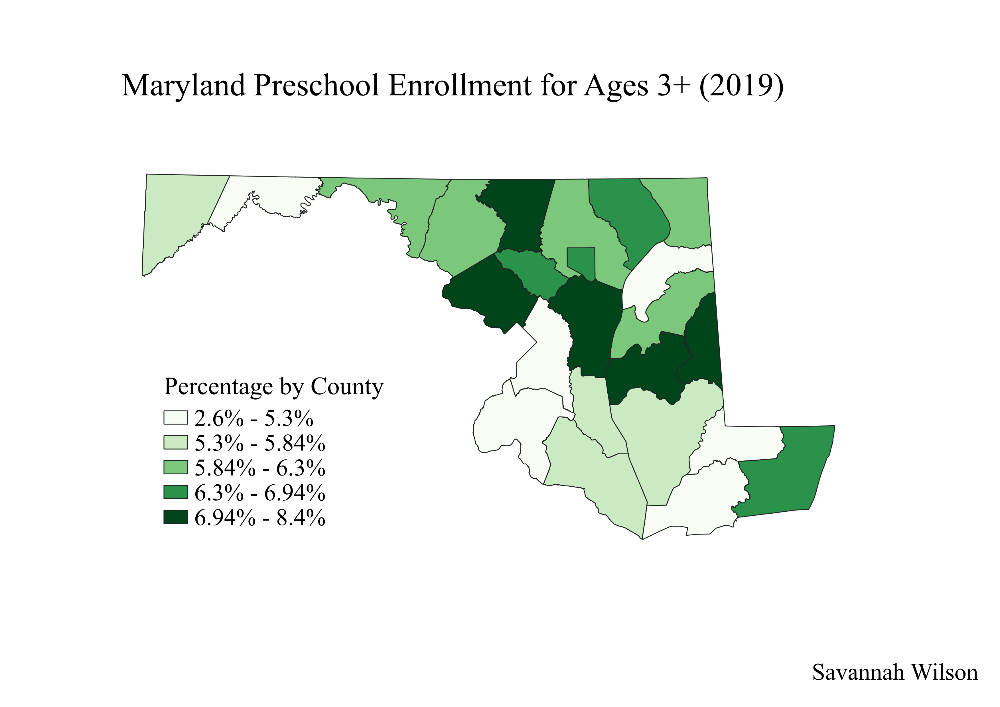

Maryland Preschool Enrollment (2019)
Savannah Wilson
This map depicts the 2019 preschool enrollment rate for children ages 3+ in Maryland. While the color gradient suggests a range of percentages, no county has greater than 8.4% enrollment, which is quite low. Maryland law requires that children ages 5 and up attend school, so preschool is optional. Most of Maryland’s education budget is spent on K-12 schools, so program quality and cost of enrollment are two major reasons why enrollment rates are so low (NIEER 2018).
